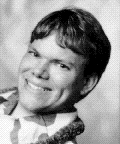
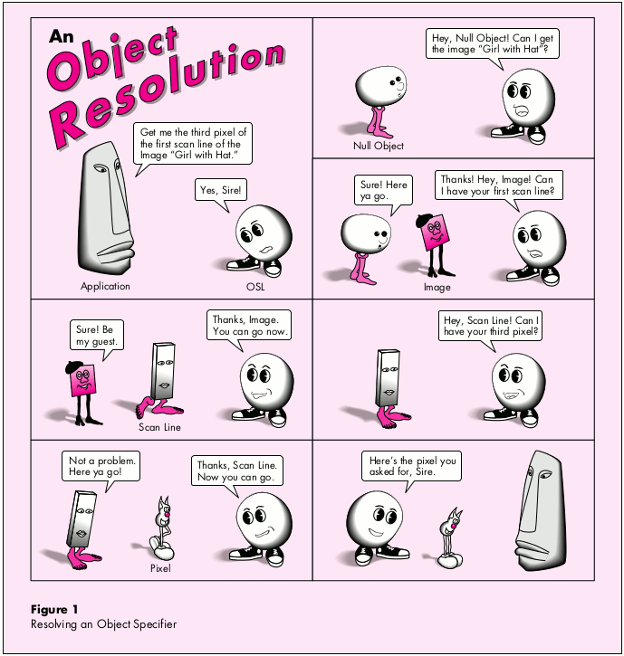
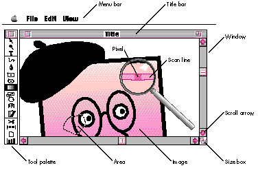
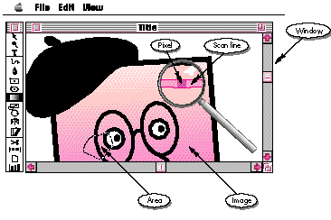

In "Apple Event Objects and You" in develop Issue 10, Richard Clark discusses a
procedural approach to programming for Apple events and goes into details of the Apple
event object model. This article reveals a few simple truths about the significance of
Apple events and the Apple event object model, focusing on how the object model maps
onto a typical object-oriented application. It also provides an object- oriented C++
framework for adding scripting support.
It's every developer's worst nightmare: Your team has just spent the last two years
putting the finishing touches on the latest version of Turbo WhizzyWorks II NT Pro,
which does everything, including make coffee. As a reward for your great work, the
team is now preparing to do some serious tanning development on an exotic island.
Then, Marketing comes in with "one last request." They promise it's the last thing
they'll ask for before shipping, and in a weak moment, you agree that one last little
feature won't hurt your itinerary. "Good," quips the product manager, "then as soon as
you add full scripting support, you can enjoy your vacation."
You know that to add scripting support, you need to delve into Apple events. You think
this requires learning about Apple events, the Apple event object model, and scripting
systems. Further, you think Apple events must be designed into your application from
the ground up and can't possibly be added without a complete redesign. Which of the
following is the appropriate reaction to Marketing's request?
Unfortunately, there's no correct answer, but the scenario is all too real as developers
are increasingly being asked to add scripting support to their applications. The design
of Apple events and the Apple event object model can provide the user with more power
than any other scripting system. However, to access the power of the design you need to
work with the complex interface provided by the Apple Event Manager. By its nature,
this interface collapses to a procedural plane of programming that prevents developers
from fully taking advantage of the object-oriented design inherent in the Appleevent
world. The Apple event object model is difficult to implement without some fancy
footwork on the part of your framework. But remember the words of Marshall
Brodeen, "All magic tricks are easy, once you know the secret." With this in mind,
join me on a trip through the rabbit hole into AppleEventLand.
Whenever I give presentations on Apple events, the audience has an overwhelming urge
to ignore the theory and jump into coding. Resist the urge. For most developers Apple
events provide an unfamiliar perspective on application design. To appreciate the
significance of Apple events and the object model, it's important to understand their
underlying concepts and background. So, although you'll be reading about code later, a
little theory needs to come first.
At the most basic level, Apple events are a program-to-program communication
(PPC) system, whereprogram is defined as a piece of code that the Macintosh can see
as an application (in other words, that has a real WaitNextEvent-based event loop).
However, billing Apple events as PPC is akin to describing an F-16 as merely a plane.
To fully understand how Apple events are more than simple program-to-program
communication, you need to take a look at the Apple event object model.
The object model isn't really defined in a pithy paragraph ofInside Macintosh , but is
instead a holistic approach to dealing with things that users call objects. In a literal
sense, the object model is a software developer's description of user-centric objects
orcognitive objects.
COGNITIVE THEORY
Cognitive science tells us that people interact with the world through objects. A
printed copy ofdevelop is an object, a plant in the corner of your office is an object,
and a can of Coke Classic on your desk is an object. Each of the objects has properties,
behaviors, and parts. Some properties exist for each of the objects (for example, each
one has aname ) and other properties make sense for only some of the objects (for
example,page size makes sense only when applied todevelop ). Behaviors are quite
similar to properties in their ephemeral binding to objects. Only Coke willfizz , but
all three objects will decompose . However, they eachdecompose in a different way.
Further, each object can be separated into arbitrary parts that are themselves
objects. The plant can be separated into branches, which can in turn be separated into
leaves. The plant itself can also be separated into leaves, so leaves are contained by
both branch objects and plant objects.
BACK INSIDE THE COMPUTER
Now, since a user will someday interact with your software, and since users interact
with the world in terms of cognitive objects, it makes sense to model software in
terms of cognitive objects. Hence, the object model describes objects in a rather
ghostlike fashion whereby objects have behaviors and properties and contain other
objects. Although the object model defines an inheritance for each category of objects
(for example, Journal might inherit from OpenableThing which might inherit from
Object), it's used only for the purpose of grouping similar behaviors. Just as in the
mind, the only thing that's important is the identity of a specific object in existence at
a given time -- its categorization is purely a detail of implementation.
Gee, this sounds a lot like whatreal programmers mean when they talk about objects.
Strangely enough, real objects and cognitive objects are quite related. Many references
cite cognitive theory as justification for beginning to program in an object-oriented
style. Object-oriented code tries to get closer to the language of the native operating
system of the human mind than traditional procedural approaches, and the format of an
Apple event object mirrors natural language to a surprisingly large degree. It comes
as no surprise, then, that Good Object Design lends itself quite easily to slipping in
support for Apple event scripting.
The motivation for you to provide object model support is so that your users can
"script" your application. There are a variety of solutions available today that allow
advanced users to write things that resemble DOS batch files or UNIX® shell scripts.
These entities are commonly calledscripts , but in the context of Apple events a script
is something with greater potential. Whenever a user thinks "Iwant to sharpen the
area around the rose in this picture," a script has been formed. If this seems too
simplistic, consider it again. Script here refers to the earliest conception of a user's
intent to do something. It's not relegated to the world of the computer and does not
imply any given form or class of forms; an oral representation (voice interface a la
the Knowledge Navigator) is equally as valid as a written one (traditional scripting
systems). From this perspective, the definition ofscript takes the user to a greater
depth of control over applications than previously dreamed of, allowing access to the
very engine of your application by the very engine of the user. This is the great
empowering ability of Apple events: they enable users to use their native operating
system -- the mind -- with little or no translation into computerese.
The biggest problem with Apple event objects is the interface provided by the Apple
Event Manager. Instead of allowing you to write real object-oriented source code
using a given class library that implements basic Apple event and object model
functionality, the Apple Event Manager requires you to register every detail
programmatically. You must declare what classes exist, which methods exist and
where, and what relationships are possible within and between classes. Although at
first this flexibility seems advantageous, many developers find it a problem later
when they have to declare everything again at run time. Anyone with secret desires to
design an object-oriented runtime environment and a compiler/linker combination to
support that environment will feel quite at home with Apple event coding.
The second biggest problem with Apple event objects is that programs aren't written
in the Apple event (user) world. Instead, they're often written in object-oriented
programming languages like LISP and C++. What's needed is a good generic interface to
translate objects from the user world of natural language into the world of LISP or
C++ objects. Scripting systems do some of the work by delivering Apple event objects
to applications in the form of object specifiers, a strange data structure that
resembles a binary form of natural language stuffed into the familiar Apple event
generic data structure AEDesc. However, object-oriented applications ship objects
around in the form of . . . well . . . objects! So, you need translation from binary
natural language to actual objects. Easy, huh? (Don't hurt me yet -- this will seem
fairly straightforward after reading a bit further.)
Presenting a new interface should solve the problem of the Apple Event Manager
interfaces. Presenting that new interface in terms of the familiar object-oriented
class libraries should solve the problem of different paradigms. So, if these two
problems are approached with an object perspective, it's clear that some of the classes
in your program need to include a set of methods that implement object model
protocols. Application domain classes must be able to return objects contained within
them and to perform generic operations on themselves. It turns out that if your classes
also provide the ability to count the number of a specific type of object they contain,
you can provide a rudimentary, yet powerful, parsing engine for transforming objects
from the Apple event world into the traditional object programming world.
Further analysis indicates that only those application domain classes that correspond
to object model classes need this protocol. This indicates that the protocol for
providing Apple event object model support is probably appropriate to provide in a
mixin class (a class that's meant to be multiply inherited from). In this way, only
those classes that need to provide object model support must provide the necessary
methods. In the sample application discussed later, that class is called MAppleObject.
MAppleObject plays a key role in UAppleObject, a generic unit that can be used to
provide Apple event object model support to any well-designed C++ application.
Apple provides a convenient solution to the user versus programming language
problem in the form of the Object Support Library (OSL). The OSL has the specific
responsibility of turning an object specifier into an application's internal
representation of an object. (See "A Sample OSL Resolution" for an example of how the
OSL actually works.) The OSL implements a generic parsing engine, applying a few
simple assumptions about the state of the application's design to the problem.
However, for all the power provided by the engine within the OSL, it lacks an
object-oriented interface. Instead, it uses a paradigm like that provided by the Apple
Event Manager, requiring the application to register a set of bottleneck routines to
provide application-specific functionality. As with the Apple Event Manager, you must
write routines that implement runtime dispatching to theindividual objects your
application creates instead of using the natural method-dispatching mechanisms found
in your favorite object-oriented language, whatever it may be.
Here's a short example to give you a feel for how the OSL actually works. Don't read too
much into the details of object resolution, but do try to understand the flow and
methodology the OSL applies to resolve object specifiers. Also, don't worry too much
about how the OSL asks questions; the protocol you'll actually be using in UAppleObject
hides such details from you.
Figure 1 on the next page gives an overview of the process. Consider the simple object
specifier "the third pixel in the first scan line of the image called 'Girl with Hat,'" and
an Apple event that says "Lighten the third pixel in the first scan line of the image
called 'Girl with Hat' by twenty gray levels." On receiving this Apple event (Lighten)
the application notes that the direct object of the event (the third pixel in the first
scan line of the image called "Girl with Hat") is an object specifier and asks the OSL to
resolve it into a real object.
At this point the parsing engine in the OSL takes over, beginning a dialog with your
application through a set of preregistered callback routines. Notice that the object
specifier bears a striking resemblance to a clause of natural language -- English in
this case. This is not unintentional. Apple event objects are cognitive objects, and
cognitive objects are described by natural language -- hence the parallels between
object specifier formats and natural language. Further, the parsing engine inside the
OSL operates like a high school sophomore parsing sentences at the chalkboard. But I
digress . . .
To continue, the OSL asks the null object to give it a token for the image called "Girl
with Hat." (Tokens are the Coin of the Realm to the OSL.) So the null object looks
through its images to find the one named "Girl with Hat" and returns a token to it.
The OSL then turns around and asks the image called "Girl with Hat" to give it a token
for the first scan line. After getting this token, the OSL has no further use for the
image token, so it's returned to the application for disposal. In effect, this says, "Uh,
hey guys, I'm done with this token. If you want to do anything like free memory or
something, you can do it now." Notice how polite the OSL is.
Next, the OSL asks the scan line for a token representing the third pixel, which the
line handily returns. Now it's the scan line token's turn to be returned to the
application for recycling. The OSL has no further use for the scan line token, so the
application can get rid of it if necessary.
Finally, having retrieved the token for the third pixel of the first line of the image
called "Girl with Hat," the OSL returns the token with a "Thanks, and come again." The
application can then ask the object represented by the token to lighten itself
(remember that was the original Apple event), and dispose of the token for the pixel.
As you can see, the OSL operates by taking an unreasonable request, "give me the third
pixel of the first line of the image called "Girl with Hat," and breaks it into a number
of perfectly reasonable requests. Thus, your application gets to take advantage of its
innate knowledge of its objects and their simple relationships to answer questions
about complex object relationships.

Figure 1 Resolving an Object Specifier
The nicest thing about the OSL is that, like the Apple Event Manager itself, it applies
itself quite well to being wrapped with a real object-oriented interface (although you
have to write it yourself, sigh). Curiously, the OSL solves both problems -- poor
interface and cognitive versus object- oriented programming differences. With a nice
object-oriented framework, you can write your code once, in the fashion to which
you're accustomed. I won't lie to you by telling you the job becomes easy, but it does
change from obscure and harrowing to straightforward and tedious.
There are two basic concepts defined in the object model. One iscontainment , which
means that every object can be retrieved from within some other object. In the
language of the object model, every object iscontained by another object. The only
exception to this rule is the single object called thenull object . The null object is
commonly called theapplication object, and may or may not be contained by another
object. In practice, a null object specifier is like a global variable defined by the
object model. The application implicitly knows which object is meant by "null object."
Object resolution always begins by making some query of the null object. For
example, with a simple image processor, it would be appropriate to state that pixels
are contained by scan lines, scan lines by images, and images by windows. It's also
appropriate to have pixels contained by images and windows. Windows themselves have
no natural container, however. Therefore, they must be contained by the null object.
One way you can decide whether these relationships make sense for your product is to
ask if a user could find it useful to do something to "the eighth pixel of the second scan
line" or to "the twentieth pixel of the image." If statements like these make sense, a
containment relationship exists.
The second basic concept of the object model isbehavior . Behavior is quite simple; it
means that objects must be able to respond to an Apple event. Behavior correlates
directly with the traditional object programming concept of methods of a class. In fact,
as you'll see, the actual Apple event-handling method of Apple event objects is usually
a switch statement that turns an Apple event into a dispatch to the C++ method that
implements the Apple event's functionality.
Taken together, the concepts of containment and behavior define the limits for objects
in the model of the Apple event world. The object model resembles the programming
worlds of Smalltalk or LISP, where everything is an object. Everything. For those
familiar with these paradigms where even integers, characters, and floating-point
numbers are full first-citizen objects, the Apple event world will be a refreshing
change from traditional programming in C++ and Pascal.
The overriding concept in designing object model support in your application is to do
what makes sense for both you -- as the developer -- and the user.

Figure 2
You may have noticed that this approach falls into the category of Good Object Design.
Undoubtedly, anyone who does object-oriented design has gone through a similar
process when developing an application. Resist the temptation to design the
application's internal structure using G.O.D. and be done with it, because the object
model design is different from the application design. When designing the application,
you typically analyze structure from the perspective of eventually implementing the
design. Thus, you impose design constraints to make implementation easier. For
example, you probably don't keep representations of images, areas, and pixels, but
choose one model for your internal engine -- a reasonable solution for a programmer
looking at the problem space. A typical image processing program usually has real
classes representing images, and probably has an area class, but may not have a pixel
class or scan line class. Pixels and scan lines may be implemented by a more basic
representation than classes -- simple indices or pointers into a PixMap, for example.
However, when you design object model support, you have a very different
perspective. You're designing classes based on user expectation and intention, not on
programmer constraints. In object model design of an image processor, youdo have
TImage, TArea, TScanLine, and TPixel classes, regardless of your internal
representation. This is because a usersees all these classes. The TImage and TArea may
be the same as your internal engine's TImage and TArea, and probably are. After all,
there's little reason to ignore a perfectly usable class that already exists. However,
the TPixel and TScanLine classes exist only to provide object model support. I call
classes that exist only to provide object model supportephemeral classes.
Undeniably, the most useful tool for finding objects is user testing. Another important
source of information is the Apple Event Registry. The Apple Event Registry describes
Apple event classes that are standardized in the Apple event world. The Registry lists
each class along with its inheritance, properties, and behaviors. It's also the last word
on the values used to code object model support. For example, constants for predefined
Boolean operators and class types are listed in detail. As you follow the process for
finding the objects in your application, you can use the elements found in the Registry
as a basis for your investigation and for later implementation. For example, if your
user tests reveal that a pixel class is appropriate for your application and a Pixel
class is documented in the Registry, you should probably use the behaviors and
properties documented there as a basis for your application's TPixel class. Doing so
allows your application to work well with existing scripts that manipulate pixels and
allows your users to have a consistent scripting experience across all pixel-using
applications.
In addition to the principles imposed by the object model itself, the OSL makes a few
reasonable assumptions about what applications provide to support their objects.
Since the object model requires that objects be able to retrieve contained objects, the
OSL allows an object to count the number of objects of a given type contained within
them. So, if an image contains scan lines, the image object needs to be able to count the
number of scan line objects contained within it. Of course, in some circumstances, the
number of objects that are contained can't be counted or is just plain big (try asking
how many TSand objects are contained in a TBeach object). In this case, the OSL allows
the object to indicate that the number can't be counted. Additionally, the OSL allows
applications to apply simple Boolean operators to two objects. The operators
themselves are a part of theApple Event Registry. They include the familiar operators
like less than, equal to, and greater than as well as some more interesting relations
like before, after, over, and under. The requirement for these operators is that they
have Boolean results. This means that ifobject1 and object2 have operator applied to
them, the expressionobject1 operator object2 is either true or false. Of course,
there's no requirement that every class implement every operator, only those that
make sense. It makes little sense to ask if an object of type TColor isgreater than
another, butbrighter than is another story.
During resolution of an Apple event, the OSL asks for tokens of objects between the
application object and the final target to be returned (as described earlier in this
article in "A Sample OSL Resolution"). To a programmer, they look like AEDescs being
passed around, but the OSL treats them specially:
Since the data contained in the AEDescs is private, the OSL must provide a system for
the application to know when a token is being created and when it's being terminated.
Creation of tokens is provided through the containment accessor protocol. Termination
is provided by a callback routine which does the actual token disposal and which the
application registers with the OSL. This callback is invoked from AEDisposeToken and
comes in handy when applying the object model to C++ classes.
There are also a number of features that are beyond the scope of this article. One of
these is the OSL concept ofmarking objects. This means that objects are labeled as
belonging to a particular group. The contract the OSL makes with the application is
that the OSL will ask whenever it needs a new kind of mark, and the application will
recognize whether any object is marked with a particular mark. Further, given the
mark itself, the application will be able to produce all the objects with that mark. If
this sounds particularly confusing, just consider mark objects as typical list objects.
Given a list and an object, it's quite natural to answer the question, "Is this object in
this list?" Further, it's quite natural to answer the question, "What are all the objects
contained in this list?"
The framework for adding Apple event support described later in the section "Inside
UAppleObject" satisfies the basic OSL requests for counting objects, applying Boolean
operators, and handling tokens. However, it doesn't handle marks. The intrepid reader
could add support for this feature with a little thought.
To incorporate object model support into your applications, you need a class library
that implements the object model classes you want to support -- for example, the
TWindow, TImage, TArea, and TPixel classes described earlier. These classes exist
because they represent Apple event objects the application will support. Then you
create a mapping of Apple event objects to the C++ classes that implement them (see
Figure 3). For the sake of argument, say that TWindow, TArea, and TImage are also
part of the class library used to implement the non-object-model portions of the
program. The TPixel class is an ephemeral class. What these four classes have in
common is a mixin class,MAppleObject, that provides the hooks for adding object
model functionality (see the next section, "Inside UAppleObject," for more details).

Figure 3 The Objects As Implemented
MAppleObject must include protocol that implements the object model and OSL
concepts. Given an MAppleObject, there should be protocol for returning an object
contained within MAppleObject. This accessor method is expected to return an object
that satisfies the containment request. It also needs to inform the framework if the
returned object is an ephemeral object -- some might say that such an object islazy
evaluated into existence. As a practical matter, this informs the framework whether
an object needs to be deleted when the OSL disposes of the object's token (as described
in "A Sample OSL Resolution"). Obviously, it would be undesirable to have the
framework delete the TImages because the application depends on them for its internal
representation. It would be equally stomach-turning to have all the TPixels pile up in
the heap, never to be deleted.
Since TPixel objects don't actually exist until they're lazy evaluated into existence,
you're free to design their implementation in a wide variety of ways. Remember that
one of the contracts the OSL makes with the application is that tokens need to be valid
only during the resolution of the current object specifier. Well, consider that the
implementation of images is just a handle of gray values. Normally, if someone
suggested that a pixel be implemented as an index into a block of data, you'd throw
temper tantrums. "What!" you'd yell, "What if the pixel is moved in the image! Now
the index is stale." This is not an issue for tokens, because they're transient. Since
pixels won't be added during the resolution of an object specifier, such a
representation is fine. Of course, if you'd prefer a more robust implementation, that's
fine, too, but remember that the OSL doesn't impose such robustness on you.
MAppleObject must also include a protocol to implement the comparison operators,
counting protocol, and behavior dispatching. As a practical matter, these methods will
likely be large switch statements that call other, more meaningful, methods depending
on the details of the request. For example, the counting protocol might key on the kind
of objects that should be counted and invoke methods specialized to count contained
objects of a specific class.
Finally, each class provides protocol for telling clients which object model class the
object represents. This is necessary for the framework to be able to communicate
with the OSL. During the resolution conversation the OSL holds with the framework,
the framework returns descriptors of each object the OSL asks for. These descriptors
are required to publish to the OSL the type of the object returned from the request.
UAppleObject is a framework whose main contribution is the class MAppleObject.
MAppleObject provides the basis for integrating Apple event objects and Apple event
object support into object- oriented applications. UAppleObject also includes a
dispatcher, TAppleObjectDispatcher, and the 'aedt' resource. You drop the
UAppleObject files into your application and immediately begin subclassing to provide
Apple event functionality.
EXCEPTION HANDLING IN UAPPLEOBJECT
Developers familiar with the details of Apple event implementation are no doubt aware
that the Apple Event Manager deals exclusively with error code return values, as does
the rest of the Toolbox. When the Apple Event Manager invokes a developer-supplied
callback routine, that routine commonly returns an integer error code. This style of
error handling is found nowhere in UAppleObject. Instead, UAppleObject uses the
UMAFailure unit to provide exception handling. UMAFailure is a unit available on
theDeveloper CD Series disc that provides both a MacApp-style exception-handling
mechanism for non-MacApp programs and excellent documentation for its use.
Wherever UAppleObject is invoked through a callback routine that expects an error
code to be returned, all exceptions are caught and the exception's error code is
returned to the Toolbox. Therefore, when an error occurs, call the appropriate
FailXXX routine provided by UMAFailure -- for example FailMemError, FailNIL, or
FailOSErr. In the UAppleObject documentation, calling one of these routines is
referred to as throwing an exception.
MAPPLEOBJECT
The major workhorse of UAppleObject is MAppleObject, an implementation of the basic
Apple event object functionality. MAppleObject is an abstract mixin class that
provides the protocol necessary for the UAppleObject framework to resolve Apple
event objects and handle Apple events.
class MAppleObject
{
public:
MAppleObject();
MAppleObject(const MAppleObject& copy);
virtual ~MAppleObject();
MAppleObject& operator=(const MAppleObject& assignment);
virtual DescType GetAppleClass() const = 0;
virtual long CountContainedObjects(DescType ofType);
virtual MAppleObject* GetContainedObject(DescType desiredType,
DescType keyForm, const AEDesc& keyData,
Boolean& needDisposal);
virtual Boolean CompareAppleObjects(DescType compareOperator,
const MAppleObject& toWhat);
virtual void DoAppleEvent(const AppleEvent& message,
AppleEvent& reply, long refCon);
static void SetDefaultAppleObject(MAppleObject* defaultObject);
static MAppleObject* GetDefaultAppleObject();
static void GotRequiredParameters
(const AppleEvent& theAppleEvent);
static void InitAppleObject
(TAppleObjectDispatcher* dispatcher = nil);
};
GetAppleClass
DescType GetAppleClass() const = 0;
GetAppleClass is an abstract method that returns the object model type of an object.
Every MAppleObject subclass should override this method to return the object model
type specific to the individual object.
CountContainedObjects
long CountContainedObjects(DescType ofType);
CountContainedObjects should return the number of objects of the indicated type that
are contained within the receiver object. This is usually done by counting the number
of objects your subclass knows how to access and adding it to the number of objects the
parent class finds (in other words, call the inherited version and add it to the number
you find yourself). If the number of objects is too large to be enumerated in a signed
16-bit integer, CountContainedObjects may throw the errAEIndexTooLarge exception.
GetContainedObject
MAppleObject* GetContainedObject(DescType desiredType, DescType
keyForm,
const AEDesc& keyData, Boolean& needDisposal);
GetContainedObject is a generic method for obtaining an object contained by the
receiver. Subclasses always override this method to provide access to the subclass's
contained objects. The desiredType, keyForm, and keyData arguments indicate the
specific object to be returned as the function result. If the resulting object is one used
in the framework of the application, GetContainedObject should return false in the
needDisposal argument.
The alternative is for GetContainedObject to create the resulting object specifically for
this request; in this case, it returns true in the needDisposal argument. If
needDisposal is true, the UAppleObject framework deletes the result object when it's
no longer needed.
CompareAppleObjects
Boolean CompareAppleObjects(DescType compareOperator,
const MAppleObject& toWhat);
CompareAppleObjects performs the logical operation indicated by the arguments,
returning the Boolean value of the operation. The semantics of the operation is this
compareOperator toWhat . So, if the compareOperator parameter were
kAEGreaterThan, the semantics of the method call would bethis is greater than toWhat .
Subclasses always override this method to provide the logical operations they support.
DoAppleEvent
void DoAppleEvent(const AppleEvent& message, AppleEvent& reply,
long refCon);
When an object is identified as the target of an Apple event, it's sent the
DoAppleEvent message. The message and reply Apple event records are passed in the
corresponding arguments. If the direct parameter to the message is
typeObjectSpecifier, the object specifier is guaranteed to resolve to the receiver;
otherwise the receiver is the application object. Additional modifiers for the event can
be extracted from the message, and the reply should be filled in by DoAppleEvent, if
appropriate. The refCon parameter is the shortcut number registered with the
UAppleObject framework (see the section "The 'aedt' Resource"). Subclasses always
override DoAppleEvent to dispatch their supported Apple events to appropriate
methods.
SetDefaultAppleObject and GetDefaultAppleObject
void MAppleObject::SetDefaultAppleObject
(MAppleObject* defaultObject);
MAppleObject* MAppleObject::GetDefaultAppleObject();
GetDefaultAppleObject returns the MAppleObject currently registered as the null
container. Similarly, SetDefaultAppleObject registers a particular object as the null
container. Usually, the object serving as null container doesn't change during the
lifetime of the application -- it's always the application object. In this case, just call
SetDefaultAppleObject from within your application object'sconstructor. But
remember that any Apple event that arrives when no null container is registered falls
on the floor and is returned to the Apple Event Manager with the errAEEventNotHandled
error.
GotRequiredParameters
void MAppleObject::GotRequiredParameters(const AppleEvent&
theAppleEvent);
GotRequiredParameters is here for convenience. To do Apple event processing
"right," each Apple event handler should check that it has received everything the
sender sent. Almost every good Apple event sample has this routine and calls it from
within the handlers. Since all handling is done from within an MAppleObject method, it
makes sense for this protocol to be a member function of MAppleObject. However, the
member function really doesn't need access to the object itself, and could actually be
called from anywhere, so it's a static member function.
InitAppleObject
void MAppleObject::InitAppleObject
(TAppleObjectDispatcher* dispatcher = nil);
InitAppleObject must be called once after the application initializes the Toolbox and
before it enters an event loop (specifically, before WaitNextEvent gets called). This
method installs the given object dispatcher, or creates a TAppleObjectDispatcher if nil
is passed.
TAPPLEOBJECTDISPATCHER
The second element of UAppleObject is TAppleObjectDispatcher. Together with
MAppleObject, TAppleObjectDispatcher forms a complete model of Apple events, the
objects themselves, and the Apple event engine that drives the object protocol.
TAppleObjectDispatcher is responsible for intercepting Apple events and directing
them to the objects that should handle them. A core feature of this engine is the ability
to resolve object specifiers into "real" objects.
class TAppleObjectDispatcher
{
public:
TAppleObjectDispatcher();
virtual ~TAppleObjectDispatcher();
virtual void Install();
virtual MAppleObject* ExtractObject(const AEDesc& descriptor);
virtual void StuffDescriptor(AEDesc& descriptor,
MAppleObject* object);
virtual void HandleAppleEvent(const AppleEvent& message,
AppleEvent& reply, long refCon);
virtual void AccessContainedObjects(DescType desiredClass,
const AEDesc& container, DescType containerClass,
DescType form, const AEDesc& selectionData,
AEDesc& value, long refCon);
virtual long CountObjects(const AEDesc& containerToken,
DescType countObjectsOfType);
virtual Boolean CompareObjects(DescType operation,
const AEDesc& obj1, const AEDesc& obj2);
virtual void DisposeToken(AEDesc& unneededToken);
virtual MAppleObject* GetTarget(const AppleEvent& message);
virtual void SetTokenObjectDisposal(MAppleObject* tokenObject,
Boolean needsDisposal);
virtual Boolean GetTokenObjectDisposal(const MAppleObject*
tokenObject);
virtual MAppleObject* ResolveSpecifier(AEDesc& objectSpecifier);
virtual void InstallAppleEventHandler(AEEventClass theClass,
AEEventID theID, long refCon);
static TAppleObjectDispatcher* GetDispatcher();
};
Install
void Install();
Install is called when the dispatcher object is actually installed (at InitAppleEvent
time). It's responsible for reading the 'aedt' resources for the application and
declaring the appropriate handlers to the Apple Event Manager as well as registering
with the OSL. Overrides should call the inherited version of this member function to
maintain proper functionality. This method may be overridden to provide functionality
beyond that supplied by TAppleObjectDispatcher -- to provide for mark tokens, for
example, which are left as an exercise for the reader. (Don'cha just hate it when
articles do this to you?)
ExtractObject and StuffDescriptor
MAppleObject* ExtractObject(const AEDesc& descriptor); void StuffDescriptor(AEDesc& descriptor, MAppleObject* object);
One of the key abstractions provided by TAppleObjectDispatcher is the packaging of
MAppleObjects into tokens for communication with the Apple Event Manager and OSL.
ExtractObject and StuffDescriptor are the pair of routines that carry the
responsibility for translation. ExtractObject returns the MAppleObject contained
within the token descriptor, while StuffDescriptor provides the inverse function.
These functions are extensively used internally, but are probably of little interest to
clients. Subclasses that override one method should probably override the other as
well.
HandleAppleEvent
void HandleAppleEvent(const AppleEvent& message, AppleEvent& reply,
long refCon);
HandleAppleEvent is called whenever the application receives an Apple event. All
responsibility for distributing the Apple event to an object is held by this member
function. HandleAppleEvent is rarely overridden.
AccessContainedObjects
void AccessContainedObjects(DescType desiredClass,
const AEDesc& container, DescType containerClass, DescType form,
const AEDesc& selectionData, AEDesc& value, long refCon);
At times during the resolution of an object specifier, MAppleObjects are asked to
return objects contained within them. AccessContainedObjects is called when the
parsing engine makes that query (in other words, it's the polymorphic counterpart of
the OSL's object accessor callback routine). The method is responsible for getting the
MAppleObject container, making the appropriate inquiry, and returning the result,
properly packed. AccessContainedObjects is rarely overridden.
CountObjects
long CountObjects(const AEDesc& containerToken,
DescType countObjectsOfType);
At times during the resolution of an object specifier, it may be helpful to find out
how many of a particular object are contained within a token object. This method is
called when the parsing engine makes that query (in other words, it's the polymorphic
counterpart of the OSL's count objects callback routine). It's responsible for finding
the MAppleObject corresponding to the token, making the inquiry of the object, and
returning the answer.
CompareObjects
Boolean CompareObjects(DescType operation, const AEDesc& obj1,
const AEDesc& obj2);
At times during the resolution of an object specifier, it may be helpful to compare
two objects to determine if some logic relationship (for example, less than, equal to,
before, or after) holds between them. CompareObjects is responsible for making the
inquiry of the appropriate MAppleObject and returning the result (in other words, it's
the polymorphic counterpart of the OSL's compare objects callback routine). The
semantics of the operation isobj1 operation obj2 . So, if the compareOperator
parameter were kAEGreaterThan, the semantics of the method call would beobj1 is
greater than obj2 . This method is rarely overridden.
DisposeToken
void DisposeToken(AEDesc& unneededToken);
DisposeToken is called when the OSL determines that a token is no longer necessary.
This commonly occurs during resolution of an object specifier. DisposeToken is
responsible for acting appropriately (in other words, it's the polymorphic
counterpart of the OSL's object disposal callback routine). For the implementation in
TAppleObjectDispatcher, this means the routine checks to see if the object is marked
as needing disposal, and deletes the object if necessary.
GetTarget
MAppleObject* GetTarget(const AppleEvent& message);
GetTarget is responsible for looking at the Apple event and determining which object
should receive it. Notably, GetTarget is used by HandleAppleEvent. The
TAppleObjectDispatcher implementation sends the Apple event to the default object
unless the direct parameter is an object specifier. If the direct parameter is an object
specifier, it's resolved to an MAppleObject, which is then sent the Apple event. This
method is rarely overridden.
SetTokenObjectDisposal and GetTokenObjectDisposal
void SetTokenObjectDisposal(MAppleObject* tokenObject,
Boolean needsDisposal);
Boolean GetTokenObjectDisposal(const MAppleObject* tokenObject);
Any MAppleObject can be marked as needing disposal or not needing it.
SetTokenObjectDisposal and GetTokenObjectDisposal manage the internal
representation of the table that keeps track of such information. You may want to
override them both (never do it one at a time) to provide your own representation.
ResolveSpecifier
MAppleObject* ResolveSpecifier(AEDesc& objectSpecifier);
ResolveSpecifier returns the MAppleObject that corresponds to the object specifier
passed as an argument. Under most circumstances, you don't need to call this routine
since it's called automatically to convert the direct parameter of an Apple event into an
MAppleObject. If, however, in the course of handling an Apple event, you find another
parameter whose descriptorType is typeObjectSpecifier, you'll probably want to
resolve it through this routine. Remember that objects returned from
ResolveSpecifier may need to be deleted when the application is done with them. To
accomplish this, you may either stuff the object into an AEDesc by calling
StuffDescriptor and then call AEDisposeToken, or ask whether the object needs to be
deleted by calling GetTokenObjectDisposal and delete it if true is returned.
InstallAppleEventHandler
void InstallAppleEventHandler(AEEventClass theClass, AEEventID theID,
long refCon);
InstallAppleEventHandler is very rarely overridden. It's responsible for
registering an Apple event with the Apple Event Manager, notifying the manager that
the application handles the Apple event. GetDispatcher
TAppleObjectDispatcher* GetDispatcher();
This static member function returns the dispatcher object that's currently installed.
It's useful for calling TAppleObjectDispatcher member functions from a global scope.
THE 'AEDT' RESOURCE
The last piece of the UAppleObject puzzle is the 'aedt' resource. The definition of this
resource type is in the Types.r file distributed with MPW. Developers familiar with
MacApp's use of the 'aedt' resource already know how it works in UAppleObject because
UAppleObject uses the same mechanism.
The 'aedt' resource is simply a list of entries describing the Apple events that an
application handles. Each entry contains, in order, the event class, the event ID, and a
numeric reference constant. The event class and ID describe the Apple event the
application supports and the numeric constant is used internally by your application.
The constant should be different for each supported Apple event. This allows your
application to recognize the kind of Apple event at run time by looking at the refCon
passed to DoAppleEvent.
When installed via the Install method, a TAppleObjectDispatcher object looks at all
'aedt' resources in the application's resource fork, registering all the Apple events in
them. Thus, additional Apple event suites can be signified by adding resources instead
of adding to one resource. For example, the Rez code to define an 'aedt' resource for the
four required Apple events is as follows:
resource 'aedt' (100) {{
'aevt', 'oapp', 1;
'aevt', 'odoc', 2;
'aevt', 'pdoc', 3;
'aevt', 'quit', 4;
}};
When the Open Document Apple event ('aevt', 'odoc') is sent to the application, the
refCon value to DoAppleEvent is 2. Since you've assigned a unique numeric constant to
each different Apple event, a refCon value of 2 can be passed to DoAppleEvent only
when the Apple event is Open Document.
To add the mythical foobar Apple event ('foo ', 'bar ') to the application, mapped to
number 5, you may either add a line to the resource described above or add another
resource:
resource 'aedt' (101) {{
'foo ', 'bar ', 5;
}};
So far this sounds all well and good. The theory behind adding Apple event object
support holds together well on paper. The framework, UAppleObject, has been written
and works. The only thing left is to put my money where my mouth is and actually use
UAppleObject to demonstrate the addition of Apple events to an Apple event-unaware
application. The subject of this foray into the Twilight Zone is CPlusTESample in the
Sample Code folder on theDeveloper CD Series disc. TESample serves as the basis for
adding scripting support for object model classes.
CPlusTESample is attractive for a number of reasons. First, it's a simple application
that could support some nontrivial Apple events. Second, it's written in an
object-oriented style and contains a decent design from the standpoint of separating the
user interface from the engine and internal representation. Finally, it's written in
C++, a necessary evil for the use of UAppleObject.
To prove that CPlusTESample actually had the necessary flexibility to add Apple
events, I began by adding font, font size, and style menus to the original sample. Adding
these features required little modification to the original framework aside from the
addition of methods to existing classes. Thus, Iwas satisfied that the underlying
assumptions and framework could hold the paradigm shift of adding Apple event
support.
In identifying the objects of the program, I chose windows and text blocks as the
central object classes. If I were more gutsy, I would have attempted to actually define
words and characters. However, the ancient programmer's credo crept in -- it was
more work than I was willing to do for this example. Further complicating this
decision was the fact that CPlusTESample is built on TextEdit. Therefore, the obvious
concepts of paragraphs and words translated exceptionally poorly into the internal
representation, TEHandles. Characters would have been simpler than either
paragraphs or words, but I copped out and left it as an exercise for the reader.
The relationships between classes are very straightforward. Windows are contained by
the null object and text blocks are contained by windows. However, since I had a
concept of window, it became interesting to define various attributes contained in
windows: name, bounding box, and position. So, object model classes were defined for
names, bounding boxes, and positions.
Behaviors were similarly straightforward. Text blocks, names, bounding boxes, and
positions had protocol for getting their data and setting their data. Thus, an Apple event
could change a name or text block or could ask for a position or bounding box.
In the end, six classes were defined to implement the object model classes: TESample,
TEDocument, TWindowName, TWindowBounds, TWindowPosition, and TEditText.
TESample is the application class and functions as the null object. TEDocument
implements the window class and is used as the internal representation of the
document and all its data. The remaining four classes are ephemeral classes that refer
to a specific TEDocument instance and represent the indicated feature of that instance.
From that point, it was straightforward to write methods overriding MAppleObject to
provide the containment, counting, comparison, and behavior dispatching. You can
check out CPlusTESample with Apple event support added on theDeveloper CD Series
disc.
This section shows how UAppleObject helps you write cleaner code by looking at one of
the CPlusTESample classes in detail -- TEditText, the text class. User testing revealed
the need for a class to represent the text found inside a CPlusTESample window, so I
created a TEditText class whose objects are contained within some window class.
Additionally, users wanted to retrieve and set the text represented by the text class.
TheApple Event Registry defines a text class that roughly resembles the text class I
wanted to provide in my CPlusTESample extension. Therefore, I decided to use the
Registry's description as a basis for my TEditText class.
TEditText provides object model support for the user's concept of text, indicating that
it should inherit from MAppleObject. TEditText objects don't contain any other objects,
so there's no need to override the CountContainedObjects or GetContainedObject
methods. However, TEditText objects do respond to Apple events. The Registry says that
text objects should provide access to the text data itself through the Set Data and Get
Data Apple events. Therefore, TEditText should include methods to implement each
Apple event and should override DoAppleEvent to dispatch an Apple event to the
appropriate method. After taking all this into account, here's what TEditText looks
like:
class TEditText : public MAppleObject
{
public:
TEditText(TEHandle itsTE);
virtual void DoAppleEvent(const AppleEvent& message,
AppleEvent& reply, long refCon);
virtual DescType GetAppleClass() const;
virtual void DoAppleGetData(const AppleEvent& message,
AppleEvent& reply);
virtual void DoAppleSetData(const AppleEvent& message,
AppleEvent& reply);
private:
TEHandle fTEHandle;
};
The constructor is relatively simple to implement. Since CPlusTESample uses TextEdit
records internally, it's natural to implement TEditText in terms of TextEdit's
TEHandle data structure. Therefore, TEditText keeps the TEHandle to which it refers
in the fTEHandle instance variable.
TEditText::TEditText(TEHandle itsTE)
{
fTEHandle = itsTE;
}
UAppleObject requires each MAppleObject instance to describe its object model class
type through the GetAppleClass method. Since all TEditText objects represent the
Registry class denoted by typeText, TEditText's GetAppleClass method is exceptionally
straightforward, blindly returning the typeText constant.
DescType TEditText::GetAppleClass() const
{
return typeText;
}
DoAppleEvent is also straightforward. It looks at the refCon parameter to determine
which Apple event-handling method should be invoked. This method represents a large
part of the remaining tedium for Apple event coding. Each class is responsible for
translating the integer-based Apple event specifier, refCon in this example, into a
polymorphic method dispatch such as the invocation of DoAppleSetData or
DoAppleGetData. The nice part of this implementation is that subclasses of TEditText
won't need to implement DoAppleEvent again if all the subclass needed was the Set Data
or Get Data protocol. Instead such a subclass would simply override the DoAppleSetData
or DoAppleGetData method and let the C++ method-dispatching mechanisms do the
work.
void TEditText::DoAppleEvent(const AppleEvent& message,
AppleEvent& reply, long refCon)
{
switch (refCon)
{
case cSetData:
this->DoAppleSetData(message, reply);
break;
case cGetData:
this->DoAppleGetData(message, reply);
break;
default:
MAppleObject::DoAppleEvent(message, reply, refCon);
break;
}
}
DoAppleGetData and DoAppleSetData are the Apple event-handling methods of the
TEditText class. To developers familiar with the traditional Apple Event Manager
interfaces, these methods are the UAppleObject equivalents of what the Apple Event
Manager calls Apple event handlers. Each method follows a general pattern common to
most remote procedure call protocols, of which Apple events are an advanced form.
First, the Apple event-handling method reads additional information from the message
Apple event. The DoAppleGetData method doesn't happen to need any additional
information because the entiremeaning of the message is found in the identity of the
Apple event itself. However, DoAppleSetData needs one additional piece of information
-- the text that should be stuffed into the object.
Next, the handler method calls GotRequiredParameters, passing the message Apple
event as the sole argument. GotRequiredParameters ensures that the handler has
retrieved all the information that the Apple event sender has sent. (For a discussion of
why this is necessary, seeInside Macintosh Volume VI, Chapter 6.)
Third, the handler method will do whatever is necessary to perform the Apple event
and create necessary reply data. The Get Data Apple event requires the TEditText object
to fill the reply Apple event with the text it represents. Therefore, the DoAppleGetData
method should retrieve the text contained in the TEHandle and pack it into an
appropriate Apple event descriptor, putting that descriptor into the reply Apple event.
In contrast to Get Data, the Set Data Apple event requires no reply, but does require
that the text represented by the TEditText object be changed to reflect the text
contained by the message Apple event. Thus, the DoAppleSetData method should contain
code that sets the text contained in the object's TEHandle to the text retrieved from the
message Apple event.
void TEditText::DoAppleGetData(const AppleEvent& message,
AppleEvent& reply)
{
// Note: This method uses no additional parameters.
// Make sure we have all the required parameters.
GotRequiredParameters(message);
// Pack the text from the TEHandle into a descriptor.
CharsHandle theText = TEGetText(fTEHandle);
AEDesc textDesc;
HLock((Handle) theText);
OSErr theErr = AECreateDesc(typeText, (Ptr) *theText,
GetHandleSize((Handle) theText), &textDesc);
// Unlock the handle and check the error code, throwing an
// exception if necessary.
HUnlock((Handle) theText);
FailOSErr(theErr);
// Package the reply.
theErr = AEPutParamDesc(&reply, keyDirectObject, &textDesc);
// Dispose of the descriptor we created and check the reply from
// packaging the reply, throwing an exception if necessary.
OSErr ignoreErr = AEDisposeDesc(&textDesc);
FailOSErr(theErr);
}
void TEditText::DoAppleSetData(const AppleEvent& message,
AppleEvent& /* reply */)
{
// Get the text data descriptor from the message Apple event.
AEDesc textDesc;
FailOSErr(AEGetParamDesc(&message, keyAETheData, typeText,
&textDesc));
// Make sure we have all the required parameters.
GotRequiredParameters(message);
// Use the data in the text descriptor to set the text of
// TEHandle.
HLock(textDesc.dataHandle);
TESetText(*textDesc.dataHandle,
GetHandleSize(textDesc.dataHandle), fTEHandle);
HUnlock(textDesc.dataHandle);
// Dispose of the text descriptor we created above.
OSErr ignoreErr = AEDisposeDesc(&textDesc);
}
This article set out to reveal the deep significance of Apple events and the object model
and to find a strategy for developing an object-oriented framework to take advantage of
the Apple event object model design. Along the way, it danced around cognitive theory
and discussed how cognitive theory applies to user perception of software. You've seen
how object programming resembles such cognitive models to a more-than-trivial
degree. And you've seen how those similarities can be leveraged to give workable,
programmable models of user concepts within Turbo WhizzyWorks II NT Pro.
You've also seen the difficulties presented by the Apple Event Manager interface.
Although Apple event objects and the object model are unarguably tied to user models
and user-centric models, the Apple Event Manager is not. The UAppleObject
framework presented here works with the object model and the Apple Event Manager to
reduce generic user scripting to a tedious but straightforward task.
In the midst of all this detail, don't forget the payoff -- providing a mechanism for
users to interact with your applications using a level of control and precision
previously undreamed of. The rest, as they say, is in your hands.
ERIC M. BERDAHL (AppleLink BERDAHL) is a refugee from Chicago, recently
deported to the West Coast to join Taligent. Having lived most of his life in a suburb of
the Windy City, he exhibits a psychosis common to that area of the country -- fanatic
loyalty to the Cubs. His formula for success includes bucking the establishment and
blindly following one's heart over one's head. The jury's still out on whether that
formula works, but it's been effective so far. He's the current president of MADA, an
international developer's association devoted to providing cutting-edge access to
information about object technologies. MADA conferences are a real blast, too (just ask
Eric about his grass skirt). In his copious spare time, he collects comic books, catches
up on the Cubs' latest follies, and chases a neurotic flying disc around a grassy field
(some call it Ultimate).*
Marshall Brodeen, a.k.a. Wizzo the Wacky Wizard from station WGN's "Bozo's
Circus," was a television spokesman for T.V. Magic Cards.*
Good Object Design is sometimes lumped together with pornography as being
difficult to define, "but I'll know it when I see it." Others consider the search for G.O.D.
as a holy crusade. Rather than giving a thoroughly useless description for G.O.D. here,
I refer the interested reader to Developing Object-Oriented Software for the
Macintosh by Alger and Goldstein (Addison-Wesley, 1992).*
AEDesc is the basic Apple event data structure described in Inside Macintosh
Volume VI, Chapter 6, " The Apple Event Manager."*
The Apple Event Registry is on the Developer CD Series disc and is available in
print from APDA (#R0130LL/A). *
The naming convention I use for classes differentiates between classes that are
intended to be instantiated directly and those that are intended to be used as a mixin
class. Classes that are directly instantiable begin with an uppercase T -- TPixel, for
example. Similarly, mixin classes begin with an uppercase M -- MAppleObject, for
example.*TPixel objects don't actually exist until someone -- usually the OSL
-- asks for them. Before that, pixels are hidden within other objects, probably
TImage or TArea objects. However, when someone asks for a pixel object, suddenly a
TPixel islazy evaluated into existence.*
The TAppleObjectDispatcher implementation registers a static member
function as the actual handler of the Apple event. This static member function calls the
dispatcher's HandleAppleEvent method polymorphically. Thus, you'll most likely get
the behavior you want out of an override of HandleAppleEvent. *
UAppleObject is easier to implement in dynamic languages like Smalltalk or
Macintosh Common Lisp. However, these packages don't yet lend themselves to creating
commercial applications (no flames, please). The only language that has the requisite
malleability and marketability is Uncle Barney's love child. Sorry, folks. *
THANKS TO OUR TECHNICAL REVIEWERS Richard Clark, C. K. Haun, Chris
Knepper *